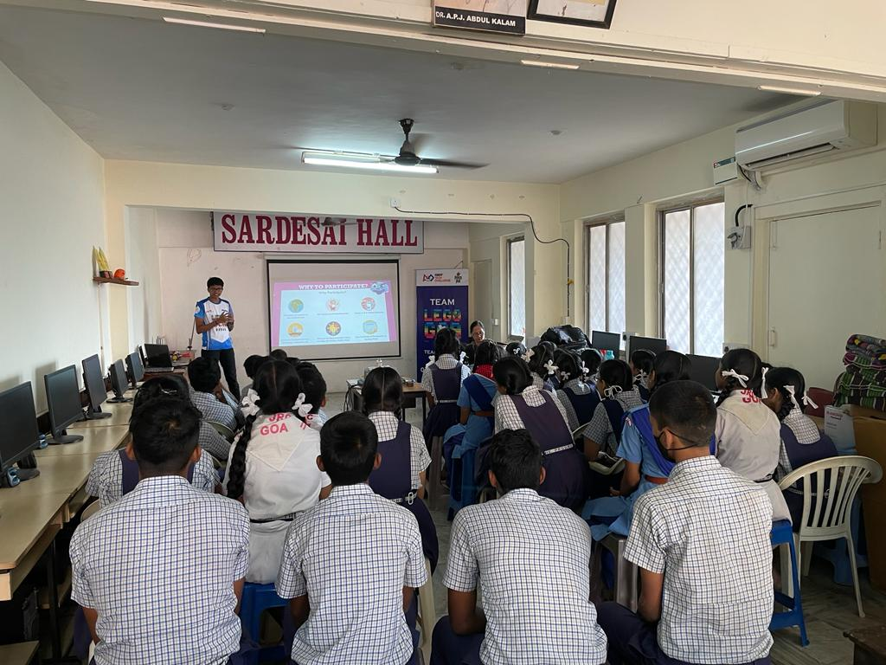
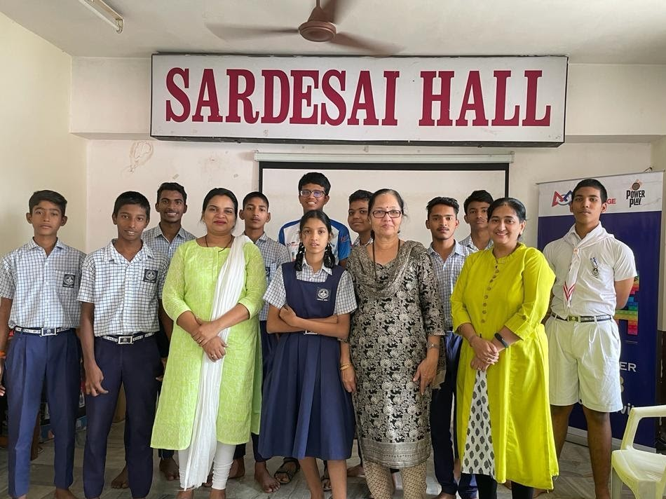
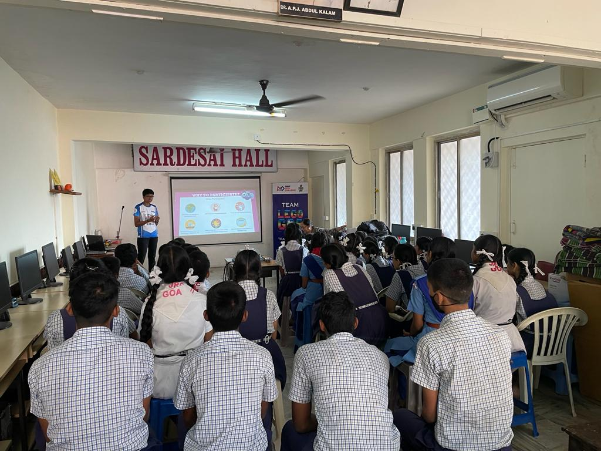
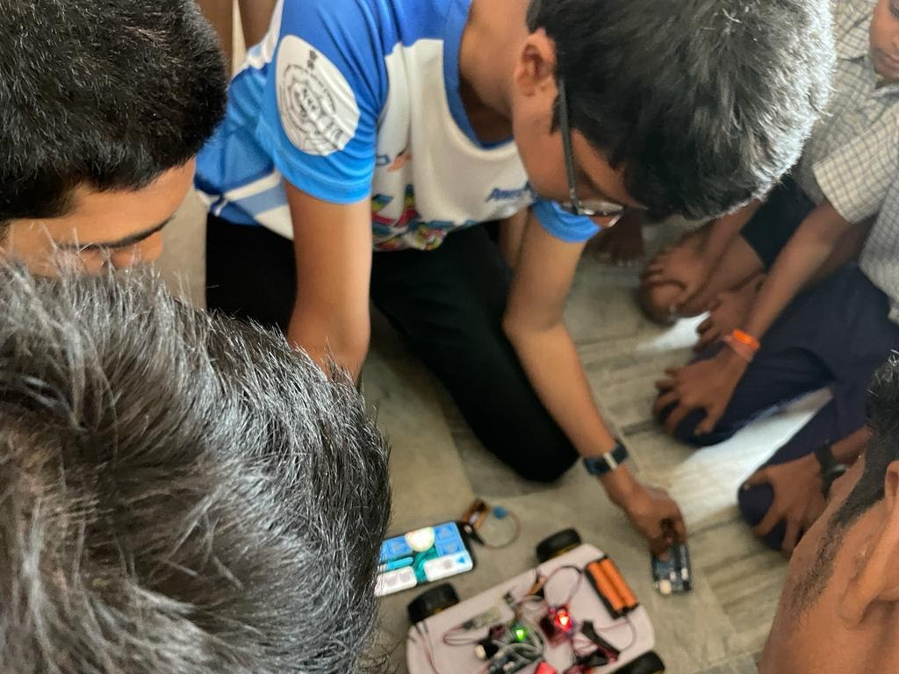
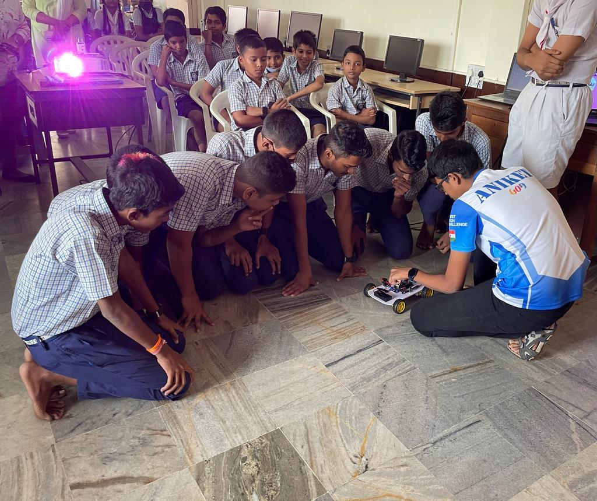
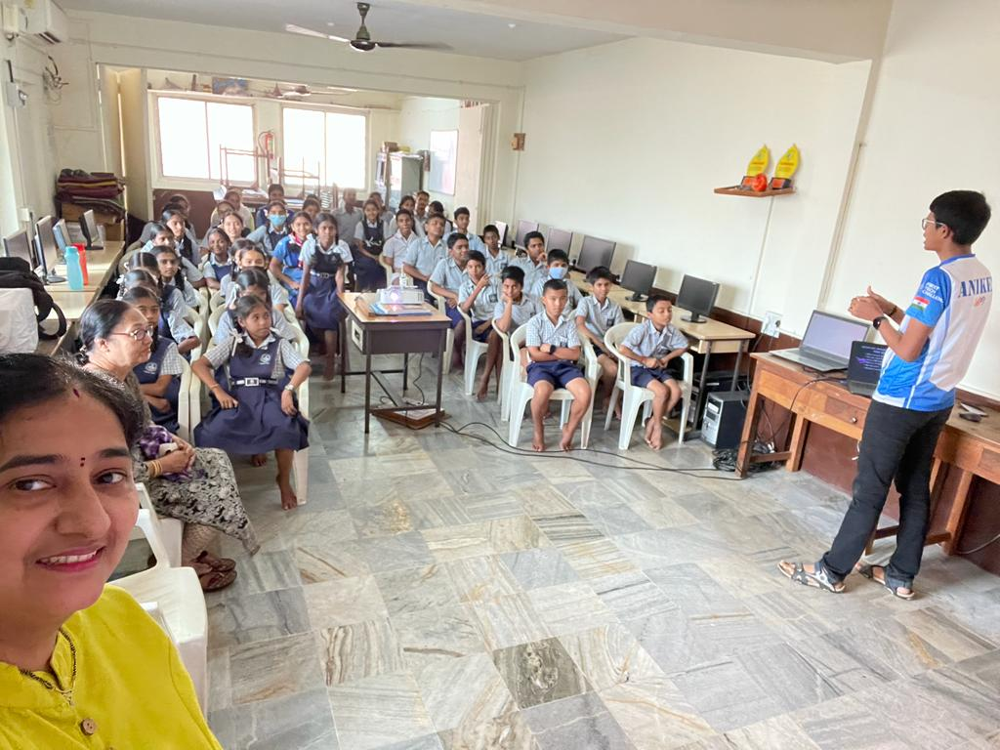

On 7 Janurary 2023, I had the privilege to host a transformative workshop at Progress High School, dedicated to shedding light on the captivating world of coding and robotics competitions. Engaging students from grades 5 to 10, the three-hour session served as a beacon of opportunity, held entirely free of charge.
The atmosphere was charged with anticipation as eager minds gathered, brimming with curiosity and a hint of apprehension. One by one, I addressed their concerns, dispelling any lingering doubts and fears surrounding robotics education. Witnessing their newfound enthusiasm was truly rewarding.
During the workshop, I encouraged them to embrace the exhilarating challenge of Codeavour 2022 AI competition, a platform open to all Goa Board students from grades 6 to 10th, completely free of charge. Beyond this, I unveiled a spectrum of innovation-driven STEM competitions facilitated by the Atal Innovation Mission and various government initiatives, igniting sparks of inspiration within each participant.
Acknowledging the invaluable support of Progress High School's management and their dedicated computer teacher, Tr. Maya Kamat, I'm deeply grateful for their unwavering commitment to enriching the educational landscape. Together, we bridged the gap, ensuring that even students from underprivileged backgrounds could venture into the realm of technology and robotics, empowered and inspired to shape their futures.
As the workshop drew to a close, I collected their contact information, eager to furnish them with well-deserved e-certificates, a testament to their newfound knowledge and passion. Reflecting on this enriching experience, I'm filled with gratitude for the opportunity to connect with these bright young minds, eager to embark on their journey of discovery and innovation.
-Aniket Sushant Bhatikar
(as a LegoGoa Axi0m Teammate)
Some highlights of the session:





Date: 7 Janurary 2023